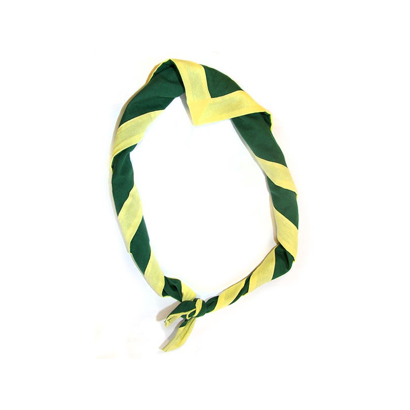

Patro don Bosco de Louvain-la-Neuve
Page d'accueil
TEST ZONE
Benjas
Etincelles
Conquérants
Contact
Je teste un peu les couleurs. Là ce sont les couleurs
officielles
du Patro ! J'ai trouvé les références sur ce
site
.
